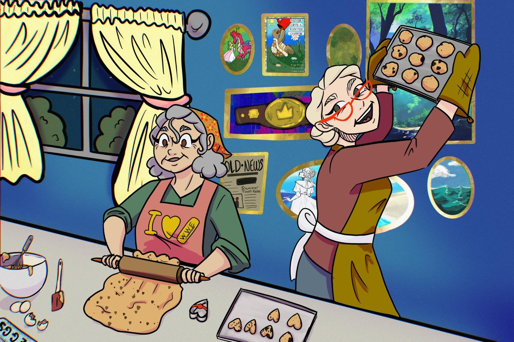
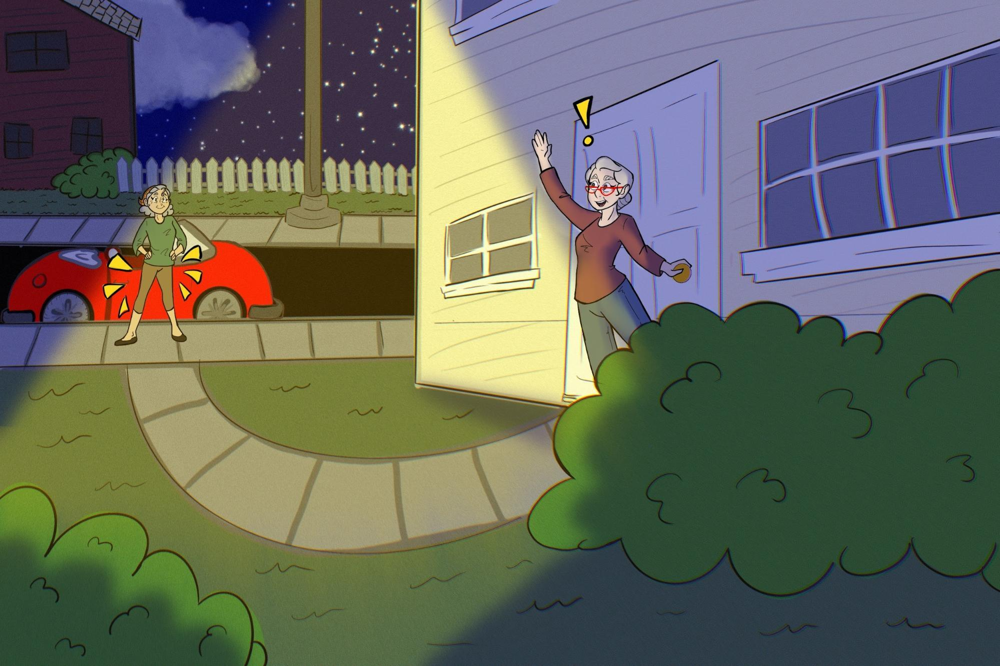
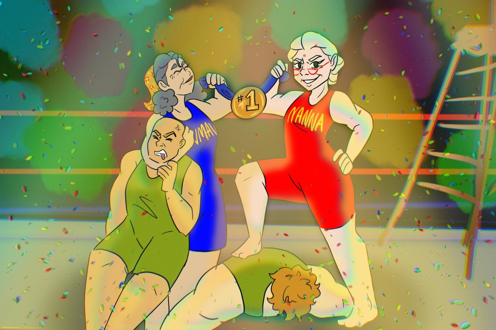

They’re sweet and they’re gentle and hum little tunes, They dust with a smile and bake under moons. They piddle with puzzles and shuffle in socks, Then vanish each night like they’re out picking locks. They yawn after dinner and say they feel old, But I’ve seen one deadlift a couch colored gold. What happens at night when they sneak out so quick? Is Grandma just Grandma… or up to some trick?
She kissed us goodnight with a grin in her eye, Then whispered, “Be good,” with a sneaky goodbye. She tucked in our blankets and turned off the light, Then darted outside in the dead of the night. We followed in stealth like two tiny spies, With our stuffies in tow and sleep in our eyes. She wasn’t alone—we gasped at the sight! It was Grandma Kelly… her pants way too tight.

We slipped through the door as they vanished from view, Past sprinklers and sneakers and one garden shoe. They crept down the street like two sneaky raccoons, While we tiptoed behind by the light of the moon. They darted through hedges and into the park, We followed in silence, concealed by the dark. They reached a steel door with a could e on the side— Then vanished within as it opened up wide.
We slipped through a door with a slam and a clank, Past posters of wrestlers and lockers that stank. The ring lights came on with a flicker and hum, And chants filled the air like a pounding war drum. Grandma leaped into the ring with a yell, She ripped off her robe like a bat outta...well. A legend appeared in the gym's glowing beams— With biceps that sparkled and thighs that'd crush spleens.
Then Kelly stepped forward and let out a roar, She flipped through the ropes and dropped to the floor. Her shades hit the mat with a thundering clink— She stared down the ring with a confident wink. With “NANNA” on tights and a scowl on her face, She pointed and growled, then strutted in place. The crowd held its breath as the tension turned red— And Grandma just nodded—no words need be said.
The lights slowly dimmed and the speakers went BOOM, The crowd turned to stone, two giants filled the room. The Bicep Brothers stomped into the ring, Each flexing so hard you could hear tendons sing. Their arms were like hams and their chests like a wall, Their necks disappeared—they had none at all. They cracked all their knuckles and growled through their teeths, The Grandmas just yawned… and rolled up their sleeves.
Then thunder returned and the smoke swirled in tight, The two stepped forward, each blocking the light. The Bicep Brothers, both flexing with pride, With traps like volcanoes and lats three feet wide. The ring nearly shook from their synchronized growl— But Grandma just grinned and adjusted her cowl. “I’ll take the big one,” said Pam with a crack— And Kelly just nodded, “I’ve got your back.”
The Brothers roared loud like two busted-up trains, The bell gave a DING! and it rattled our brains. Pam raised a chair with arthritis and sass, Then cracked it on Biceps and flattened his—mass. Kelly came flying from three ladders high, Yelled “Elbows of Love!” as she dropped from the sky. She pinned him down flat, gave his shoulder a tap, Then whispered, “You’re a nice young man, but it’s time for a nap.”
The match was now over, the belts had been won, The Biceps lay groaning, their flexing all done. We tiptoed away, thinking no one would see— But Pam met us both by the exit marquee. She raised one brow with that look moms all know, Then whispered, “Next time, try ducking more low.” The crowd shook the roof in a rumbling roar: “Bonecrusher Pam!” and “Slam-Maw! Encore!”
Now back at home, with the chaos all done, She fluffed up our pillows and kissed everyone. The house was all quiet, the moon shining thick, But we knew the truth—she had bones she could pick. She smiled and she hummed as she turned off the light, Then flexed in the mirror before saying “Goodnight.” So if you meet Grandma and think she’s a treat... Be nice—or get slammed with a folding chair seat.
